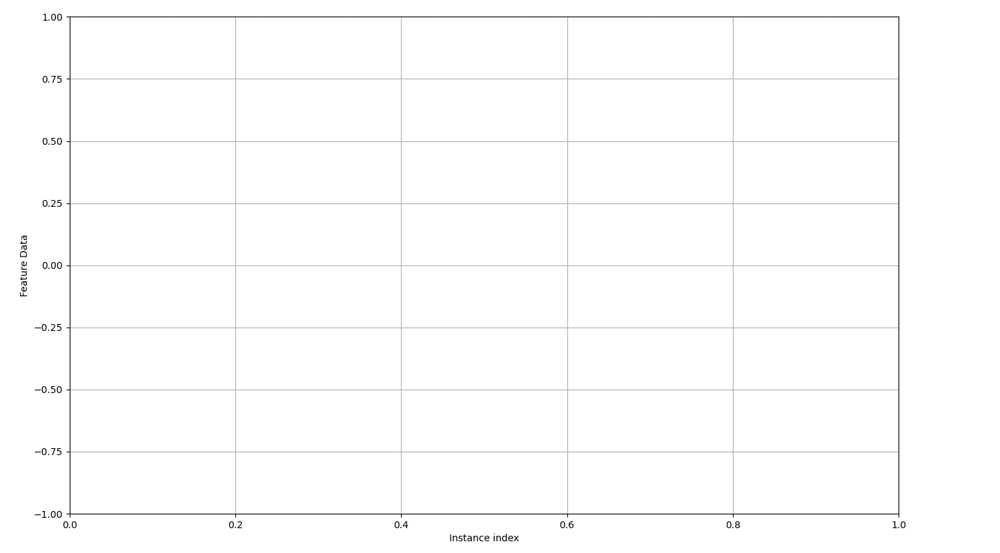

Howto OA-CA-001: Run KMeans on static 2D point clouds
Executable code
## -------------------------------------------------------------------------------------------------
## -- Project : MLPro - A Synoptic Framework for Standardized Machine Learning Tasks
## -- Package : mlpro_int_river
## -- Module : howto_oa_ca_001_run_kmeans_2d_static.py
## -------------------------------------------------------------------------------------------------
## -- History :
## -- yyyy-mm-dd Ver. Auth. Description
## -- 2023-12-22 0.0.0 SY Creation
## -- 2023-12-22 1.0.0 SY First version release
## -- 2023-12-28 1.1.0 DA Exchange of benchmark stream and number of clouds
## -------------------------------------------------------------------------------------------------
"""
Ver. 1.1.0 (2023-12-28)
This module demonstrates a task in a workflow, which is Wrapped KMeans Algorithm (River).
In this module, we demonstrate the workflow in static 2D point clouds.
This module is prepared for the MLPro-OA scientific paper and going to be stored as Code
Ocean Capsule, thus the result is reproducible.
"""
from mlpro.bf.streams.streams import *
from mlpro.bf.streams.streams.clouds import *
from mlpro.bf.various import Log
from mlpro.oa.streams import *
from mlpro_int_river.wrappers.clusteranalyzers import *
# 1 Prepare a scenario for Static 2D Point Clouds
class Static2DScenario(OAScenario):
C_NAME = 'Static2DScenario'
def _setup(self, p_mode, p_ada: bool, p_visualize: bool, p_logging):
# 1.1 Get MLPro benchmark stream
stream = StreamMLProClouds( p_num_dim = 2,
p_num_instances = 2000,
p_num_clouds = 5,
p_seed = 1,
p_radii=[100],
p_logging=Log.C_LOG_NOTHING )
# 1.2 Set up a stream workflow
# 1.2.1 Creation of a workflow
workflow = OAWorkflow( p_name='wf_2D',
p_range_max=OAWorkflow.C_RANGE_NONE,
p_ada=p_ada,
p_visualize=p_visualize,
p_logging=p_logging )
# 1.2.2 Creation of tasks and add them to the workflow
# Cluster Analyzer
task_clusterer = WrRiverKMeans2MLPro( p_name='t1',
p_n_clusters=5,
p_halflife=0.1,
p_sigma=3,
p_seed=42,
p_visualize=p_visualize,
p_logging=p_logging )
workflow.add_task(p_task = task_clusterer)
# 1.3 Return stream and workflow
return stream, workflow
# 2 Prepare Demo/Unit test mode
if __name__ == '__main__':
cycle_limit = 1000
logging = Log.C_LOG_ALL
visualize = True
step_rate = 2
else:
cycle_limit = 2
logging = Log.C_LOG_NOTHING
visualize = False
step_rate = 1
# 3 Instantiate the stream scenario
myscenario = Static2DScenario(
p_mode=Mode.C_MODE_REAL,
p_cycle_limit=cycle_limit,
p_visualize=visualize,
p_logging=logging
)
# 4 Reset and run own stream scenario
myscenario.reset()
if __name__ == '__main__':
myscenario.init_plot( p_plot_settings=PlotSettings( p_view = PlotSettings.C_VIEW_ND,
p_step_rate = step_rate ) )
input('\nPlease arrange all windows and press ENTER to start stream processing...')
tp_before = datetime.now()
myscenario.run()
tp_after = datetime.now()
tp_delta = tp_after - tp_before
duraction_sec = ( tp_delta.seconds * 1000000 + tp_delta.microseconds + 1 ) / 1000000
myscenario.log(Log.C_LOG_TYPE_S, 'Duration [sec]:', round(duraction_sec,2), ', Cycles/sec:', round(cycle_limit/duraction_sec,2))
clusters = myscenario.get_workflow()._tasks[0].get_clusters()
number_of_clusters = len(clusters)
myscenario.log(Log.C_LOG_TYPE_I, '-------------------------------------------------------')
myscenario.log(Log.C_LOG_TYPE_I, '-------------------------------------------------------')
myscenario.log(Log.C_LOG_TYPE_I, 'Here is the recap of the cluster analyzer')
myscenario.log(Log.C_LOG_TYPE_I, 'Number of clusters: ', number_of_clusters)
for x in range(number_of_clusters):
myscenario.log(Log.C_LOG_TYPE_I, 'Center of Cluster ', str(x+1), ': ', list(clusters[x].get_centroid().get_values()))
myscenario.log(Log.C_LOG_TYPE_I, '-------------------------------------------------------')
myscenario.log(Log.C_LOG_TYPE_I, '-------------------------------------------------------')
if __name__ == '__main__':
input('Press ENTER to exit...')
Results
{kind=link}
- Cross Reference